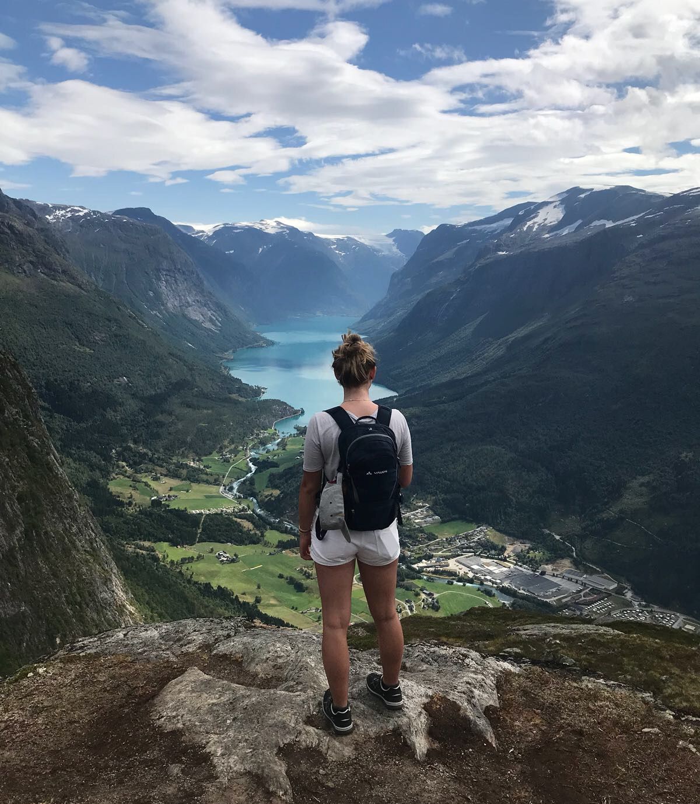

Hi! Ik ben Maartje
Een inclusive designer in opleiding en zeer gedreven om nog meer te leren voor ik klaar ben met mijn studie.
Bekijk mijn werk!
Tijdens mijn studie heb ik een hele hoop projecten gedaan.
De projecten die ik het leukst en het meest interessant vond heb ik uitgewerkt.
Lees en bekijk daar alles van!
Naar mijn werk
Lees meer over mij!
Wat ik in het dagelijks leven doe,
wie ik ben, wat mijn interesses zijn, wat ik kan en wat mijn ervaring is.
Krijg een goed beeld van mij!
Meer over mij
